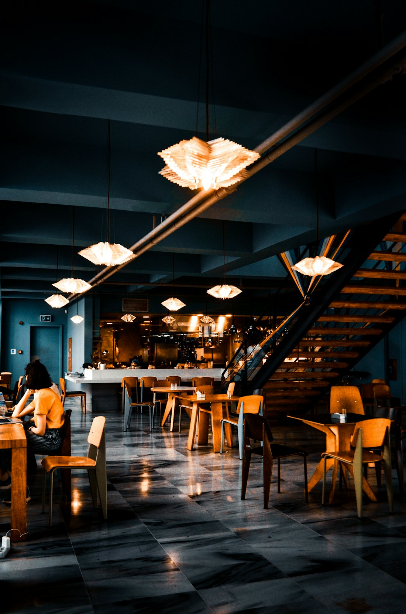
Bir ateşhikayesi
Napoli'nin dar sokaklarında başlayan, Kadıköy'de alevlenen bir tutku.
Pizza bir yemek değil, bir zanaat
2010 yılında Napoli'de, Spaccanapoli sokağındaki küçük bir pizzeria'da çırak olarak başladı her şey. Usta Gennaro'nun yanında geçen iki yıl; hamuru dinlemeyi, ateşi okumayı ve sabrı öğretti.
2012'de İstanbul'a döndüğümüzde yanımızda yalnızca bir maya kültürü, bir tarif defteri ve bir hayal vardı: Napoli'deki o ilk ısırığı, buraya taşımak.
Bugün hâlâ aynı mayayı besliyor, aynı ateşi yakıyor ve her pizzayı ilk günkü özenle hazırlıyoruz.
Acele etmiyoruz. Kısayol kullanmıyoruz. Ateşe ve zamana saygı duyuyoruz.
Yıllar boyunca
Napoli'de çıraklık
Spaccanapoli'de, üç kuşaktır pizza yapan bir ailenin fırınında ilk hamurlar açıldı.
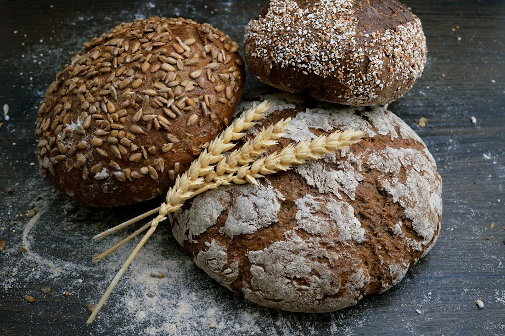
İlk fırın, Moda
Napoli'den gemiyle getirilen tuğlalarla örülen fırın, Moda'daki 24 kişilik küçük dükkânda ilk kez yandı.
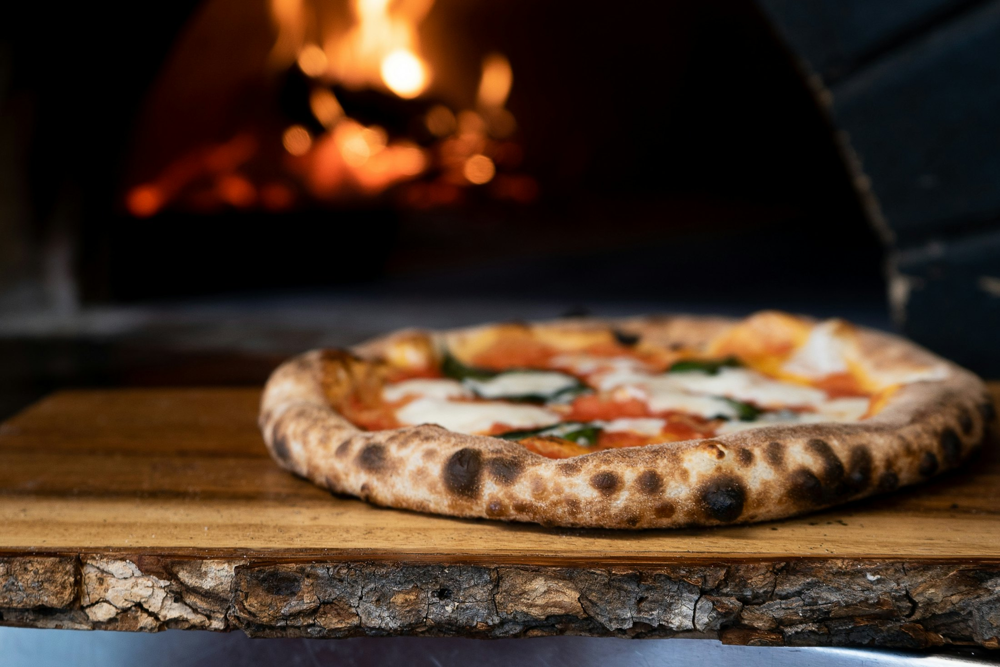
Yeni ev, daha büyük ateş
Açık mutfak, şarap mahzeni ve 90 kişilik salonuyla bugünkü evimize taşındık.
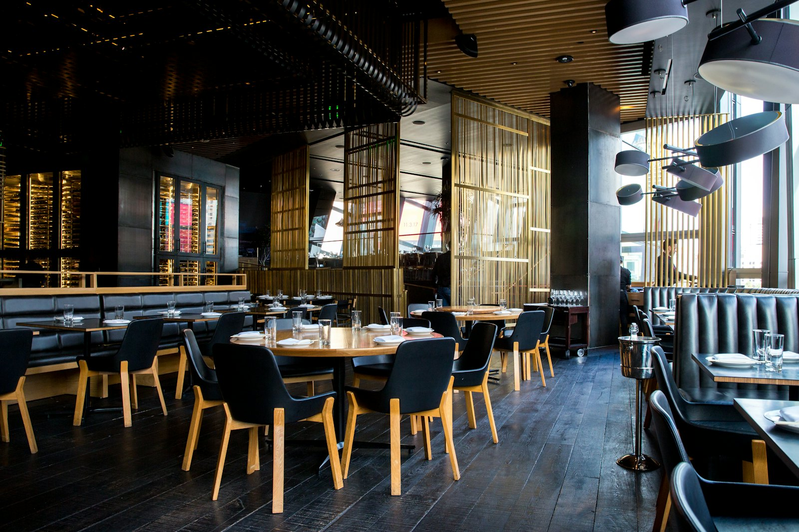
Aynı maya, aynı tutku
14 yıl ve yüz binlerce pizza sonra, 2010'da başlattığımız maya kültürü hâlâ her sabah besleniyor.
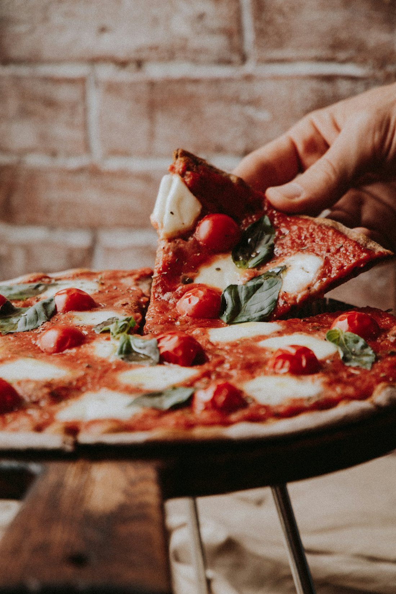
Üç kural
Menü değişir, mevsimler değişir. Bu üç kural ise ilk günden beri aynı.
Sabır
Hamurumuz 48 saat dinlenir. Ne bir saat eksik, ne bir saat fazla. Lezzetin sırrı zamandadır.
Ateş
Gaz yok, elektrik yok. Yalnızca meşe ve gürgen odunu. Her pizza alevin önünde, elle çevrilerek pişer.
Dürüstlük
Hazır sos, dondurulmuş malzeme, katkı maddesi yok. Ne kullandığımızı her zaman açıkça söyleriz.
Nereden geliyor?
San Marzano Domates
Campania, ITVezüv'ün volkanik topraklarında yetişen DOP sertifikalı domatesler.
Tip 00 Un
Napoli, ITNapoli'nin köklü değirmenlerinden, pizza için özel öğütülmüş yumuşak buğday.
Fior di Latte
Trakya, TRİtalyan ustalarla birlikte geliştirdiğimiz tarifle her sabah taze üretilir.
Sızma Zeytinyağı
Ayvalık, TRErken hasat, soğuk sıkım. Ailemizin yıllardır çalıştığı küçük bir üreticiden.
Parmigiano Reggiano
Emilia, IT24 ay olgunlaştırılmış, tekerlekten taze kesilir.
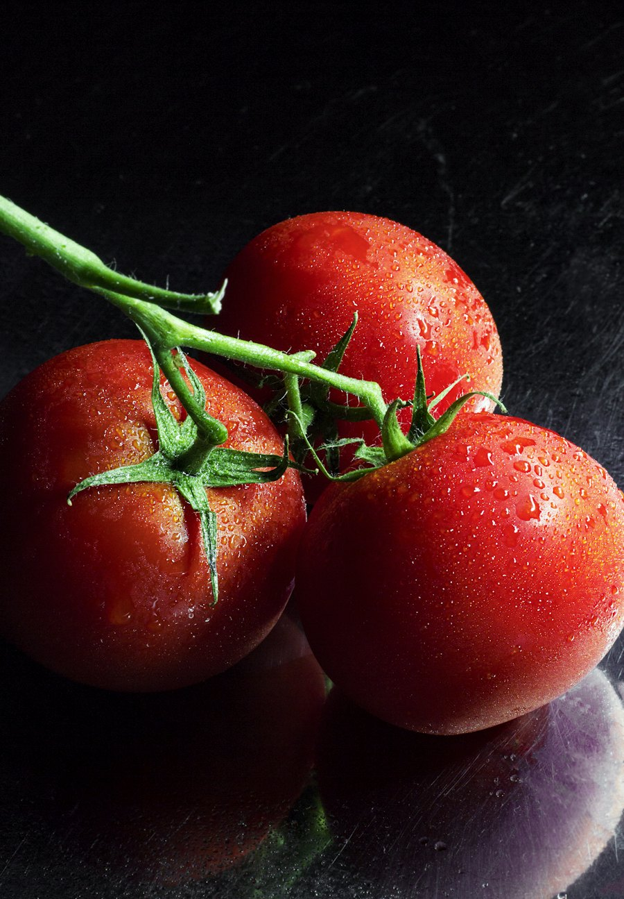
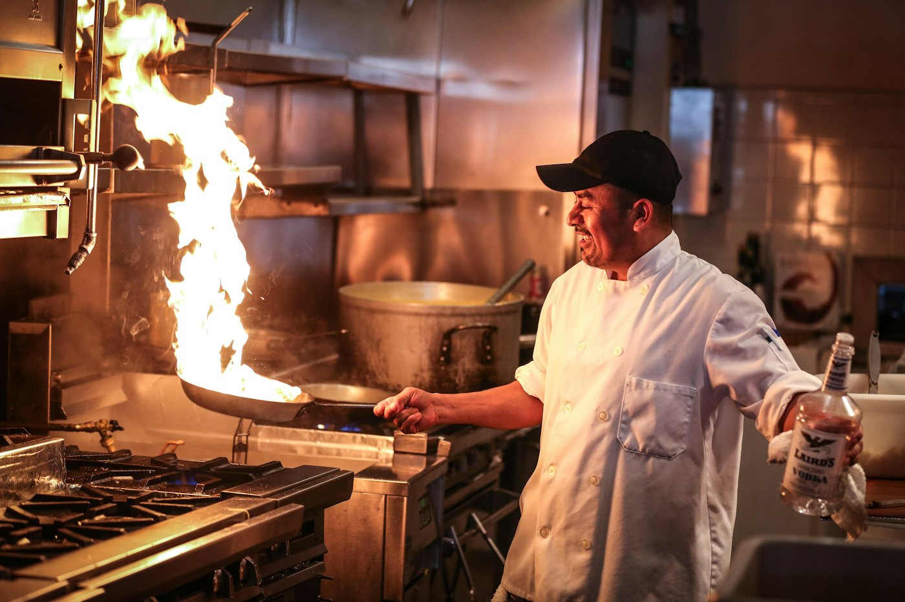
Fırın: La Bocca
Napoli'nin ünlü fırın ustası ailesi tarafından, Vezüv'ün volkanik tuğlalarıyla elde örüldü. Sabah 9'da yakılır, gece son pizzaya kadar asla sönmez.
Ateşin ustaları
Marco Esposito
Napoli'de yetişti, 16 yıldır hamur açıyor. Mayanın babası.
Deniz Yalçın
Antipasti ve makarnaların arkasındaki isim. Mevsimlerin takipçisi.
Luca Romano
Ateşi okur, alevi yönetir. Günde 400 pizzayı tek tek çevirir.
Ayşe Kaya
60 etiketlik İtalyan şarap listemizi özenle seçer.
Rosso'dan anlar
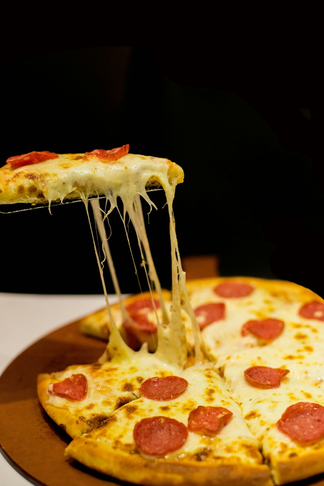
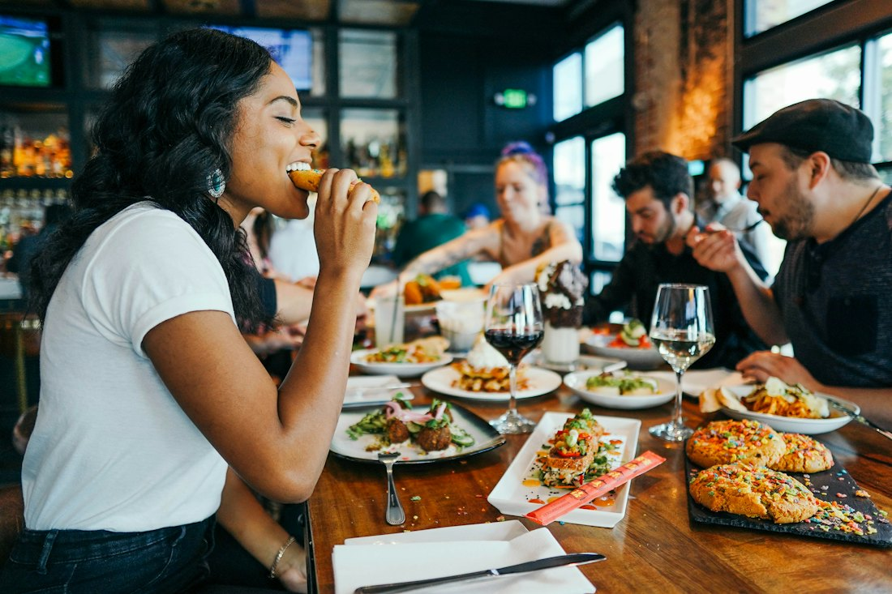
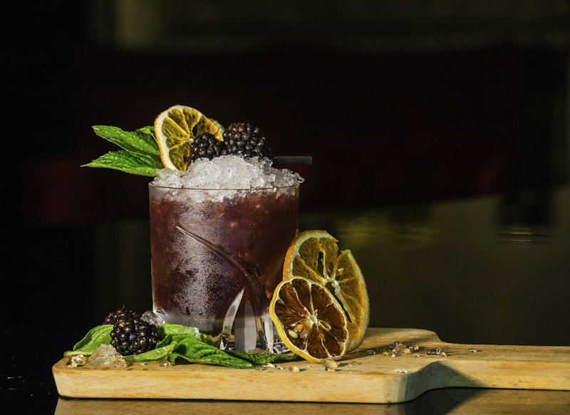
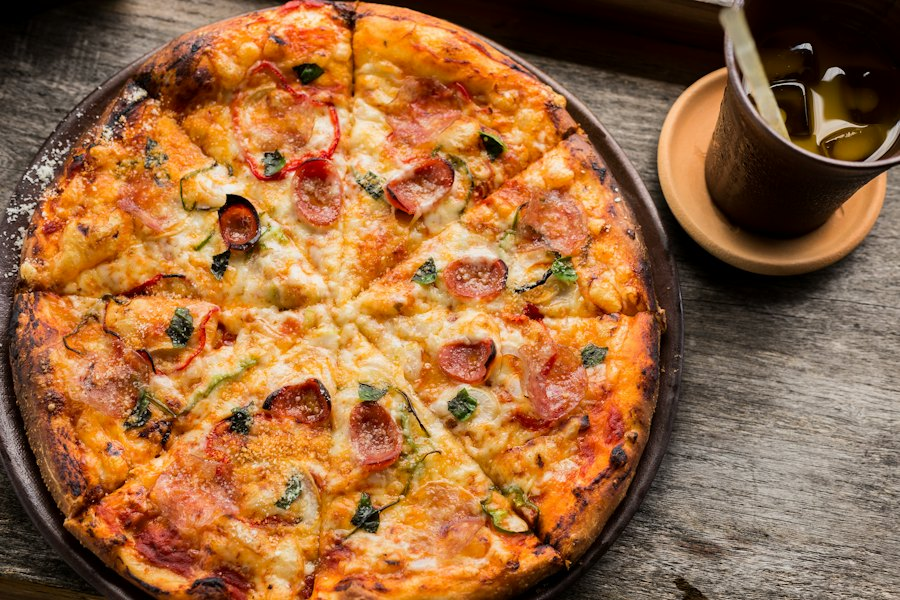
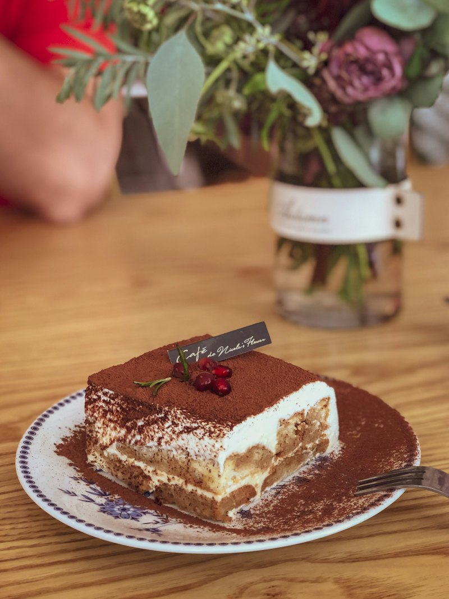
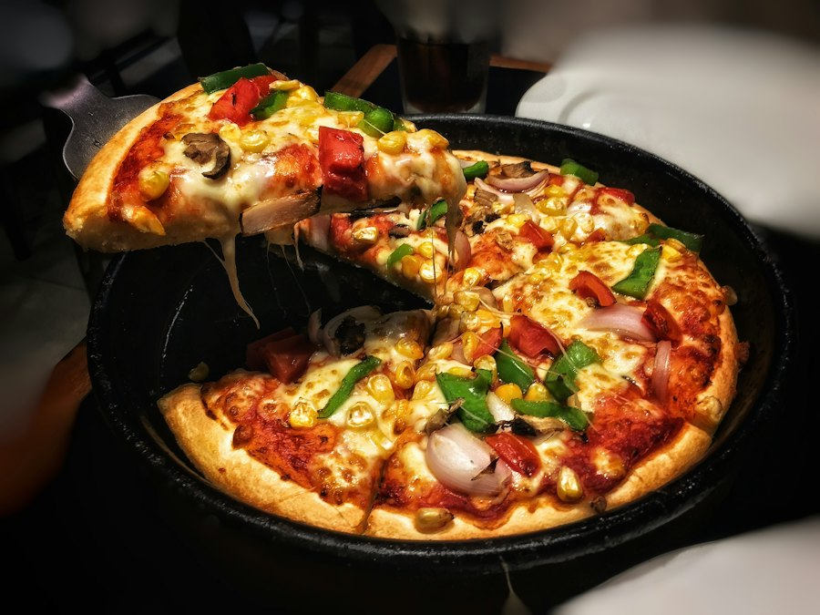
Sofraya buyurun
Fırının karşısındaki masanız sizi bekliyor.